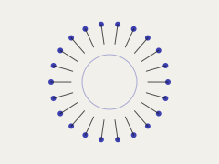
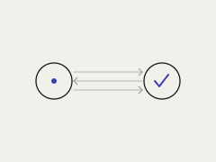
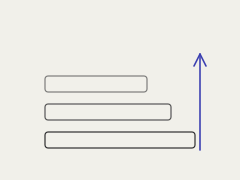
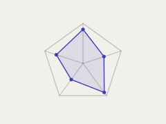
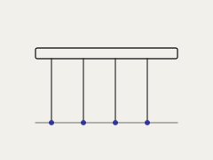

Notes & essays
Writing
Essays on drug delivery, zero-knowledge cryptography, and the systems underneath both.
2026

Apr 2026 · Kosha Sciences
Designing delivery
Kosha's integrated platform — AI-driven design, automated synthesis, and high-throughput screening — for discovering the lipid nanoparticles that new therapies depend on.
Read on Kosha Sciences →2022

Nov 2022 · Jump Crypto · co-authored
Improving Twiddle Access for Number Theoretic Transforms: The Beginnings
Cutting the memory-access overhead of the Number Theoretic Transform — one of the core bottlenecks in zero-knowledge proof generation.
Read on Jump Crypto →
Oct 2022 · Jump Crypto · co-authored
Accelerating Multi-Scalar Multiplication in Hardware… and Software
Speeding up multi-scalar multiplication — the dominant cost in ZK proving — across both FPGA hardware and optimized software.
Read on Jump Crypto →
Apr 2022 · Jump Crypto
A Primer on Cryptographic Proof Systems
An accessible introduction to modern cryptographic proof systems and how zero-knowledge proofs actually work.
Read on Jump Crypto →
Mar 2022 · Jump Crypto
A Foray Into Blockchain Scalability
A tour of blockchain scaling approaches — and where the fundamental constraints really lie.
Read on Jump Crypto →
Mar 2022 · Jump Crypto
A Framework for Analyzing L1s
A structured lens for comparing the design trade-offs across layer-1 blockchains.
Read on Jump Crypto →
Mar 2022 · Jump Crypto
Peeking Under the Hood: Key Pillars of Crypto Infrastructure
The core infrastructure layers that the rest of the crypto stack is built on.
Read on Jump Crypto →